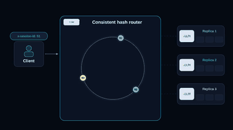
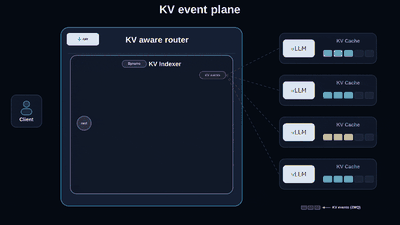
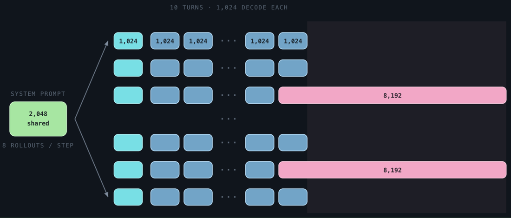
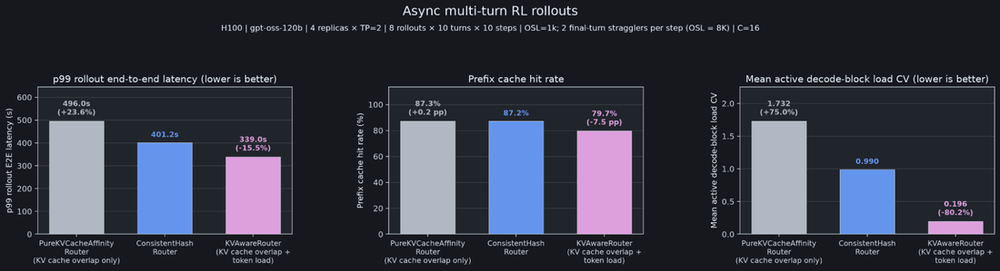
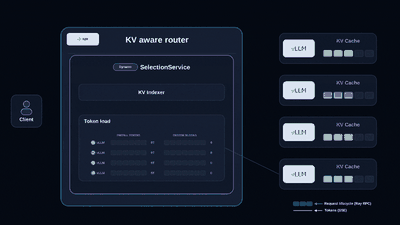
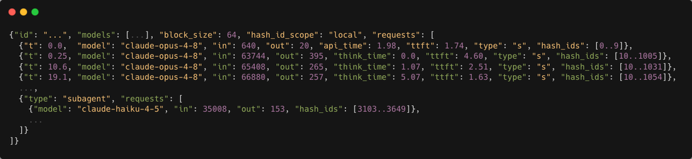
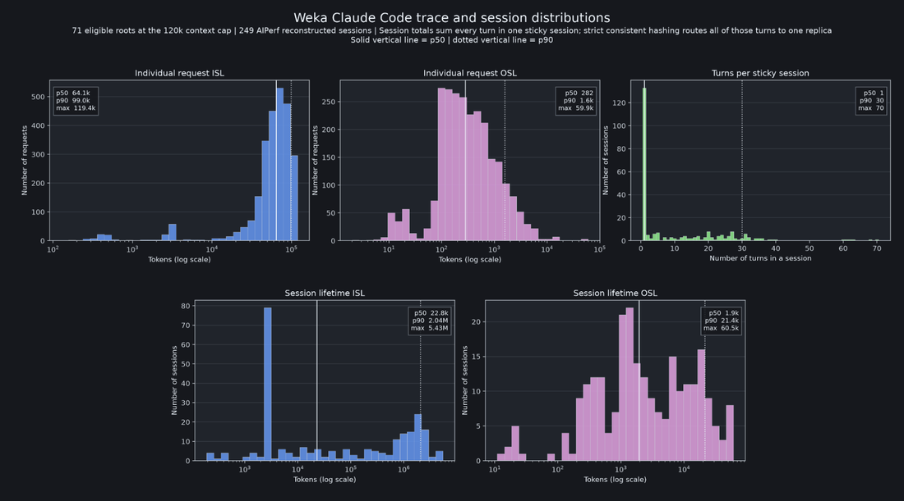
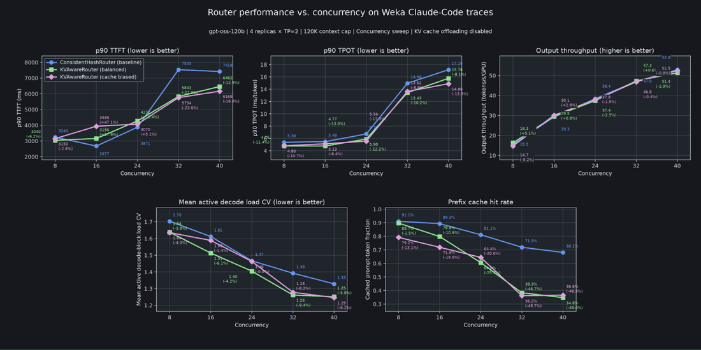

编排层对大规模 LLM serving 的整体效率至关重要。编排层把异构请求流分发给一队引擎副本的方式，直接影响 TTFT、TPOT 和吞吐。运营 vLLM 副本集群时，路由器的关键决策很简单：下一个请求给谁？
本文拆解一个误区——只优化 KV 缓存复用；引入 token 负载感知路由，并解释为何它对高效 LLM serving 至关重要。核心：KV 缓存复用应是负载估计的代理，而非路由目标本身。
LLM serving 因推理自回归特性和请求高可变性，与传统微服务路由根本不同。传统微服务独立处理请求、把相关请求路由到同一副本没什么收益；LLM serving 则引入有状态、高异构、不可预测的执行成本。
有状态执行：引擎可复用先前请求算出的 KV cache，把请求路由到已持有其前缀的副本能显著减少 prefill 计算和 TTFT。高异构：请求输入/输出序列长度差异大，GPU 资源占用和执行时间差异巨大。非确定生成：即使同一输入，生成输出 token 数也可变，请求总成本难以事先预测。
这些特性给编排层带来独特挑战：如何利用 KV 缓存复用、同时在各引擎副本间平衡异构。
最大化 KV 缓存复用是减少 TTFT、优化 serving 效率最朴素的方法。常见三种方式：session affinity、prefix affinity、KV cache affinity。

Session Affinity：通过一致哈希支持，要求客户端用 session ID 关联同会话请求。多轮工作负载下后续轮次路由到同一副本、复用早前轮次的 KV cache。一致哈希的额外收益是 session 级负载均衡——虚拟节点足够多时把 session 均匀分发到副本。
Session affinity 配置（用 ConsistentHashRouter）：
session_affinity_config = LLMConfig(
model_loading_config=...,
deployment_config=(
"request_router_config": RequestRouterConfig(
request_router_class=(
"ray.serve.experimental.",
"consistent_hash_router.ConsistentHashRouter"
)
),
engine_kwargs={...},
)Prefix Affinity：基于输入请求建前缀树，追踪哪些前缀发给过哪些副本，后续请求走树找前缀重叠最大的副本。两个局限：① 近似——前缀树追踪请求字符串而非实际 KV cache，路由器视图可能与引擎实际缓存状态不同；② 不感知驱逐——假设见过的前缀仍缓存，高并发/长服务下驱逐使视图过时（KV cache offloading 减少 cache miss，但路由器把所有缓存层一视同仁、忽略重载 offloaded 块的成本）。
KV Cache Affinity：KV aware router 从引擎摄取 KV cache 事件、构建全局 radix 树。vLLM 在 cache 块创建/移除时发事件，路由器据此拿到跨副本最新缓存状态、在每个请求的 KV cache 块级计算重叠。

与 NVIDIA Dynamo 团队合作：通过模块化接口把 Dynamo 的 KV indexer 暴露给外部库。事件/请求/数据平面保持 Ray 原生，Dynamo 的 KV indexer 计算 KV cache 重叠并贡献请求评分，分数由 Ray Serve 的 request plane 用来选目标副本。
Prefix affinity 配置（PrefixCacheAffinityRouter）：
prefix_affinity_config = LLMConfig(
model_loading_config=...,
deployment_config=(
"request_router_config": RequestRouterConfig(
request_router_class=(
"ray.serve.llm.",
"request_router.PrefixCacheAffinityRouter",
),
engine_kwargs={...},
)KV cache affinity 配置（KVAwareRouter）：
kv_affinity_config = LLMConfig(
model_loading_config=...,
deployment_config=(
"request_router_config": RequestRouterConfig(
request_router_class=(
"ray.serve.llm.",
"request_router.KVAwareRouter",
),
engine_kwargs={...},
)除 KV cache 重叠外，KV cache affinity 路由器做路由决策时还会计 token load，下面几节展开。
优化 KV cache 复用不一定最大化 serving 性能。考虑带 stragglers 的异步多轮 RL rollout：请求输入/输出序列长度差异大。每步跑八个 rollout、每 rollout 10 轮；以 2K-token 输入开始、每轮生成 1K token，除两个 straggler 最后一轮生成 8K token。

异步 RL rollout 目标通常是固定并发下最小化步时长或最大化吞吐，用 p99 端到端 rollout 延迟作步时长代理。并发=16 下比较三种路由器：PureKVCacheAffinityRouter（只优化 KV 重叠）、ConsistentHashRouter（最大化多轮 KV 复用 + session 级负载均衡）、KVAwareRouter（同时考虑 KV 重叠和 token load）。

KVAwareRouter 有最好的 p99 rollout 端到端延迟，尽管前缀 cache 命中率更低。深入看命中率和 token load——KVAwareRouter 用 KV 命中率换更均衡的 token load。
Request Herding：纯 KV affinity 会造成 request herding——一旦副本缓存了共享前缀（如系统提示词），后续请求看到 cache 重叠就优先路由到该副本，许多会话的请求撞到同一副本、产生 token load 失衡。
Load Balancing：一致哈希虚拟节点足够多时能平衡 session 数，但把 session 视为同质——LLM serving 里不是：一个 session 可能含短请求，另一个可能变成长 straggler。多个 straggler 落到同一副本、即使请求分布均匀也负载失衡。
session affinity 在保 KV cache 局部性上很好，但请求级均衡并不保证实际负载均衡。
考虑引擎为每个请求实际做的工作。请求分两阶段：Prefill——先复用任何重叠 KV cache、再为剩余未缓存输入 token 计算 KV cache；Decode——prefill 完成后开始生成输出 token，每步 decode 访问全部已生成 token 的 KV cache 再做一次前向。

这揭示 KV cache 重叠当路由目标的局限：它告诉我们能省多少 prefill，但不告诉我们引擎还要做多少。剩余负载来自两个来源：prefill load（活动 prefill token + 未缓存新入 token）和 decode load（活动请求的进行中 decode 工作量）。token load 把两者合并为单一指标，捕获每个副本计算受限的 prefill 负载和内存受限的 decode 负载。
KV cache affinity 仍重要，但角色变了：它是负载估计的代理，不是路由目标本身。KV 重叠告诉我们多少新入 prefill 能被跳过，用它估计剩余 prefill 负载、再与进行中的 decode 负载结合估计总 token load。
KVAwareRouter 是带 token-load 感知的路由策略，比 session affinity 多几个好处：自动 KV 复用（session affinity 需客户端提供 session ID、应用明确定义同会话请求；KVAwareRouter 自动发现并复用可用 KV cache、无需 session ID）；灵活性（基于工作负载调整评分函数系数）。
全程追踪每个请求生命周期（准入、首 token、decode 推进、完成），每阶段在路由器更新对应 token load。端到端请求/控制平面由 Ray Serve LLM 提供，集成 Dynamo 的 selection service 模块做请求评分。从可扩展性看，路由器被复制、跨副本维护最终一致的 token load 视图——本地做路由决策、异步共享负载更新，让路由和 token 流式脱离同步路径、所有路由器收敛到同一负载视图。
session affinity（一致哈希）在以下工作负载仍是强选项：
Cache miss 特别昂贵：长多轮对话把全部轮次留同副本保证 KV 局部性；KVAwareRouter 依评分系数可能用部分 cache 重叠换更好 token-load 均衡、需调参。跨 session KV 复用有限：会话在公共系统提示词后发散时，能发现的跨 session 新复用少。Session 负载相似：session 差异不大时一致哈希已在 session 级提供合理负载均衡。
编码 agent 是最流行的 LLM 推理工作负载之一，用真实 Claude Code traces 找灵感，在适合 gpt-oss-120b 上下文窗口的 Weka 语料子集上评估不同路由策略。

工作负载形状：会话高度异构、session 内有显著 KV 复用机会。单独请求输入/输出长度已差异大、session 级更大——有些 session 单轮，有些跨数十轮、累积数百万输入 token。

由此摆出路由权衡：最大化 KV cache 复用（session 留同副本）还是把 token load 更均匀铺到副本？

KVAwareRouter 评分副本时同时考虑 KV 重叠和 token load，结果在 TTFT、TPOT、吞吐上都优于 session affinity（一致哈希）。原因：session affinity 保住 KV 复用但只在 session 级均衡，session 可能比另一个大得多/长得多时均匀分发 session 不意味均匀分发 token load；KVAwareRouter 随并发增加用部分前缀命中率换更好 token load 均衡。结论：对异构负载，平衡 KV 复用与 token load 比单独最大化 KV 复用带来更好整体 serving 性能。
回到开头的路由挑战：KVAwareRouter 解决有状态执行和工作负载异构，但非确定生成仍是开放问题——输出长度准入时未知，一开始轻量的请求可能最终有长 decode 阶段、撞同副本造成意外 token load 失衡。行业计及这种不确定性仍是开放挑战，一个方向是让 agentic harness 提供期望生成行为的提示。
近期计划把 KVAwareRouter 支持扩展到 prefill-decode 分离部署、数据并行部署、多模态工作负载。路由仍是演进中的问题：选择在哪、什么层级路由，需深入理解工作负载和部署架构。
最优路由策略取决于工作负载。session affinity（一致哈希）为多轮对话提供强 KV 复用、在副本间均衡 session；KVAwareRouter 更进一步同时均衡 KV 重叠和 token load，为异构工作负载实现更细粒度均衡、改善 TTFT/TPOT/吞吐。
关键要点：KV cache 重叠不应是唯一路由目标。捕获剩余 prefill 和进行中 decode 的 token load 更能反映实际工作量，利用 KV 复用的同时均衡它，带来更高效 serving。
致谢：感谢 NVIDIA Dynamo 团队把 KV indexer 和请求评分模块模块化、可集成进 Ray Serve LLM。基准代码见 ray-project/ray PR 65665。
参考：https://www.anyscale.com/blog/llm-kv-token-aware-routing